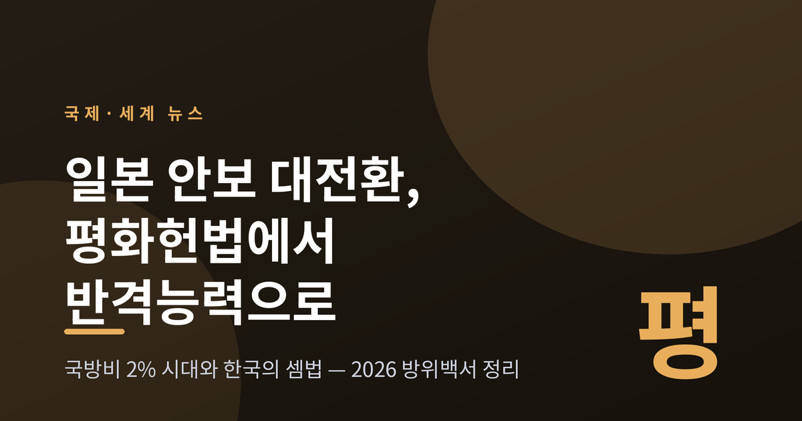
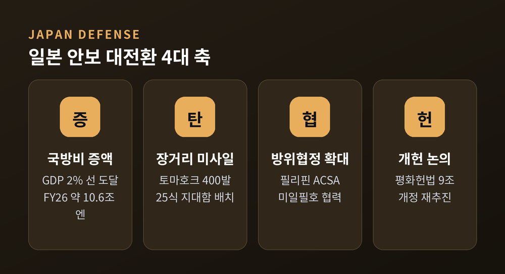
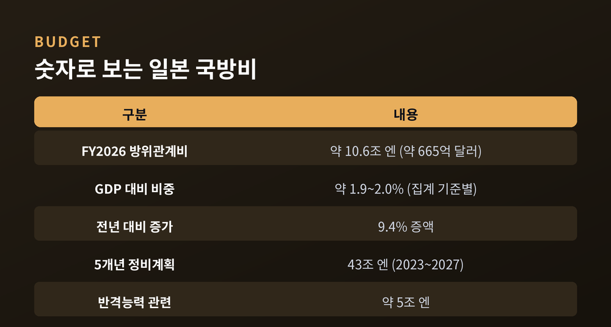
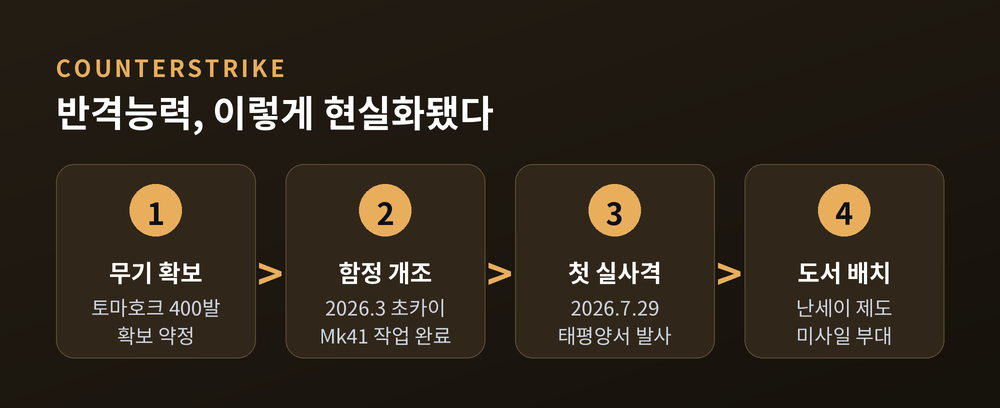
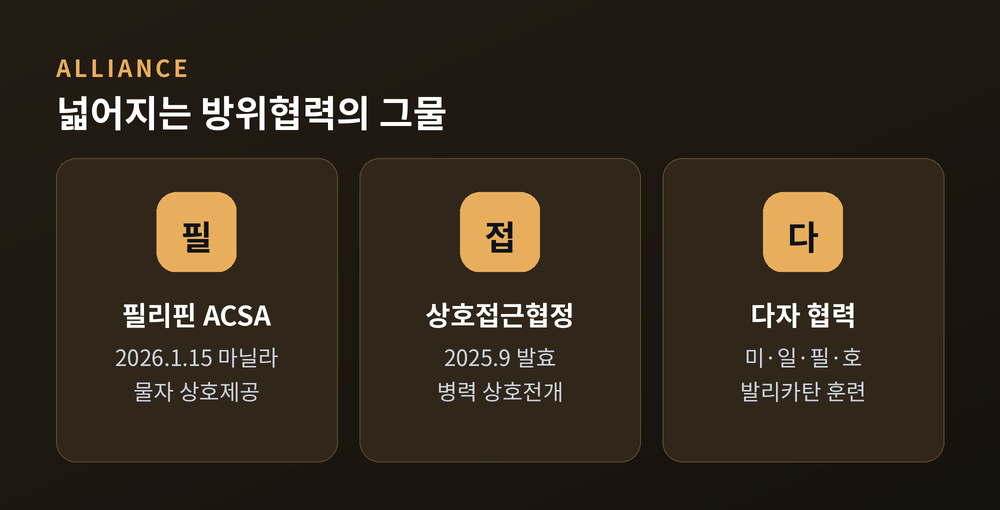
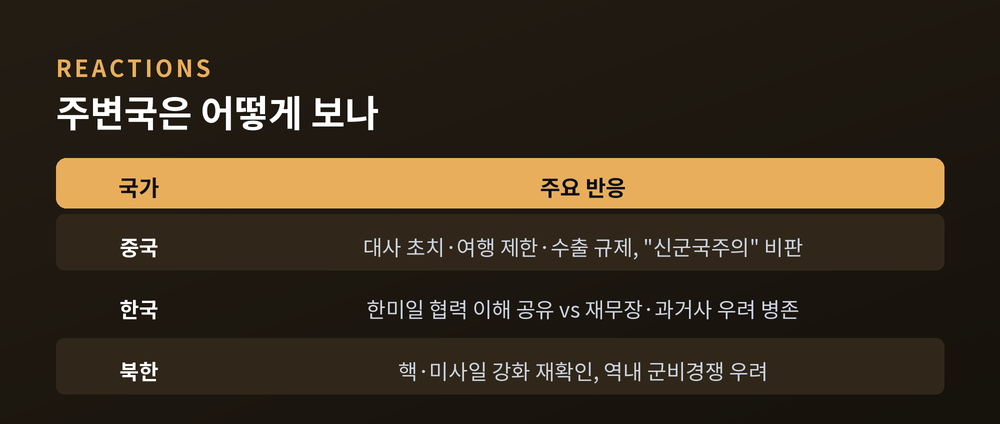

일본 안보 대전환, 평화헌법에서 반격능력으로 — 국방비 2% 시대와 한국의 셈법
이번 글에서는 일본의 안보 대전환을 정리해 보겠습니다. 전후 70여 년을 지탱한 평화헌법 노선이 흔들리고, 국방비 증액과 장거리 미사일 배치, 방위협정 확대가 동시에 진행되고 있습니다. 무슨 일이 벌어지고 있는지, 그리고 한국에는 어떤 의미인지 차분히 짚어봅니다.

무슨 일이 벌어지고 있나
2026년 8월 4일, 일본 방위성은 '2026 방위백서'를 내놓았습니다.
핵심 문장은 짧고 무거웠습니다. "일본을 둘러싼 안보 환경이 2차 대전 종전 이후 가장 어렵다."
이 한 줄이 지금 일본의 방향을 압축합니다.
일본은 전후 오랫동안 '전수방위'를 지켰습니다. 공격은 하지 않고, 오직 방어만 한다는 원칙입니다. 그 뿌리에는 전쟁 포기를 명시한 평화헌법 9조가 있었습니다.
그런데 지금은 다릅니다.
반격능력 확보, 장거리 미사일 배치, 방위협정 확대, 개헌 논의까지. 안보의 네 갈래가 한꺼번에 속도를 내고 있습니다.
중심에는 2025년 10월 취임한 사나에 다카이치 총리가 있습니다. 안보 매파로 분류되는 인물입니다. 2026년 2월 총선에서 압승한 뒤, 그동안 점진적이던 방위 강화를 압축하고 있습니다.

국방비 — 숫자로 보는 변화
가장 뚜렷한 변화는 돈입니다.
2026회계연도 일본의 방위관계비는 약 10.6조 엔, 미화로 약 665억 달러입니다. 전년 대비 9.4% 늘었습니다. GDP 대비로는 약 1.9% 수준입니다.
수치는 집계 기준에 따라 조금씩 갈립니다. 본예산상의 방위비만 보면 약 9.04조 엔이고, 여기에 관련 지출을 더하면 10.6조 엔이 됩니다. 어떤 기준을 쓰느냐에 따라 1.9%에서 2.0% 사이를 오갑니다.
주목할 점은 속도입니다.
원래 일본은 GDP 대비 2%를 2027회계연도까지 맞추려 했습니다. 그런데 2025년 12월 통과된 추가경정예산 덕분에, 당초 계획보다 약 2년 앞당겨 2% 선에 사실상 도달했다는 평가가 나옵니다.
큰 그림도 있습니다. 2023년부터 2027년까지 5년간 방위력 정비에 총 43조 엔, 약 2,750억 달러를 배정했습니다. 이 가운데 반격능력 관련 비용만 약 5조 엔입니다.
예전엔 방위비 증액에 늘 'GDP 1% 벽'이라는 심리적 상한이 있었습니다. 지금은 그 벽이 사실상 사라졌습니다.

미사일이 바뀌면 원칙도 바뀐다
돈보다 상징적인 것은 무기의 성격입니다.
2026년 7월 29일, 일본 이지스 구축함 '초카이'가 태평양에서 토마호크 순항미사일을 발사했습니다. 일본 함정이 토마호크를 실제로 쏜 것은 처음입니다. 미 해군의 지원 아래 이뤄진 실사격이었습니다.
일본은 이지스함 8척을 무장하기 위해 토마호크 400발을 확보하기로 약정했습니다.
자국산 미사일도 움직입니다. 기존 12식 지대함 미사일을 개량한 25식 지대함 유도탄은 사거리가 1,000km를 넘습니다. 여기에 극초음속 활공탄이 더해져 난세이 제도, 즉 남서 도서에 배치되고 있습니다.
일본은 이를 '남부 방패'라 부릅니다. 남서 섬들에 이동식 미사일 부대를 두어, 해상 교통로와 접근 세력을 감시하고 타격한다는 구상입니다.
문제는 이 능력의 성격입니다.
반격능력은 '공격을 받은 뒤 적의 미사일 발사 기지 등을 타격'하는 것을 뜻합니다. 방어만 한다던 전수방위 원칙의 해석을 크게 넓힌 셈입니다.
방패만 들던 나라가 이제 창도 함께 든 것입니다.

혼자 가지 않는다 — 방위협정의 확대
일본은 이 전환을 홀로 밀어붙이지 않습니다.
2026년 1월 15일, 일본과 필리핀은 마닐라에서 물품·역무 상호제공협정, 이른바 ACSA를 체결했습니다. 자위대와 필리핀군이 훈련이나 공동작전, 재난대응 때 탄약과 연료, 식량을 서로 무관세로 주고받을 수 있게 됐습니다.
이 협정은 2025년 9월 발효된 일-필리핀 상호접근협정의 이행을 뒷받침합니다. 상대국 영토에 자국 군대를 전개해 함께 훈련할 수 있는 틀입니다.
여기서 그치지 않습니다. 일본과 미국, 필리핀, 호주는 '발리카탄' 같은 다자 훈련과 해양협력을 넓히고 있습니다.
한 가지 해석이 눈길을 끕니다.
일부 분석은 일본이 필리핀과 급속히 밀착하는 배경에 "미국 안보 우산에 대한 불신"이 있다고 봅니다. 미국의 개입이 불확실할 수 있으니, 주변국과의 협력으로 위험을 분산한다는 것입니다.

평화헌법 9조 — 마지막 문턱
가장 뜨거운 쟁점은 헌법입니다.
다카이치 총리는 전쟁 포기와 전력 불보유를 규정한 헌법 9조 개정을 다시 밀고 있습니다. 아베 신조 이래 개헌에 가장 가까이 다가섰다는 평가가 나옵니다.
다만 문턱은 높습니다.
개헌에는 중의원과 참의원 각각 3분의 2 찬성, 그리고 국민투표 과반이 필요합니다. 일본 헌정사에서 개헌이 성공한 전례는 아직 없습니다. 다카이치 총리는 중의원 다수를 쥐었지만, 참의원에서는 자민당이 3분의 2에 미치지 못합니다. 우군을 규합하지 못하면 2028년 참의원 선거를 기다려야 합니다.
국내 여론도 갈립니다. '평화헌법을 지키자'는 긴급행동 집회에는 약 3만 명이 모였습니다. 주로 청년과 여성이었습니다.
일본의 안보 대전환은 아직 완결된 그림이 아닙니다. 야망과 제약이 함께 있습니다.
왜 지금인가, 그리고 이웃들은 어떻게 보나
일본이 내세우는 이유는 세 가지입니다. 중국의 군사력 확장, 북한의 핵·미사일 고도화, 그리고 러시아의 인도태평양 활동과 중·러 군사협력입니다.
2026 방위백서는 구체적 사례를 들었습니다. 중국 군용기의 이례적 근접과 사격통제레이더 조사 사건, 대만 주변의 군사적 압박입니다. 2025년 12월에는 중·러 폭격기가 처음으로 일본 남부 도서 상공을 지나 도쿄 방향으로 비행했다고 기록했습니다.
이것이 일본의 논리입니다. "위협이 커졌으니 대비도 커져야 한다."
그러나 이웃 나라들의 시선은 다릅니다.
중국은 강하게 반발합니다. 2025년 11월 다카이치 총리가 "대만 유사가 일본의 생존을 위협하면 자위대를 전개할 수 있다"는 취지로 말하자, 중국은 발언 철회를 요구했습니다. 이어 일본 대사 초치, 여행 제한, 수출 규제 같은 조치가 뒤따랐습니다. 중국 관영 매체는 일본의 방위비 급증을 '신군국주의'의 부활이라 표현했습니다.
한국의 셈법은 복합적입니다. 다카이치 총리와 이재명 대통령은 2026년 1월 회담을 가졌습니다. 대북·대중 억지라는 점에서 한·미·일 협력의 이해는 공유됩니다. 동시에 일본의 재무장과 개헌, 과거사 문제에는 신중과 우려가 함께 놓여 있습니다. 다만 한국 정부의 구체적 공식 입장은 아직 제한적으로만 확인됩니다.
북한은 일본을 직접적 위협으로 지목하며 핵·미사일 강화 방침을 재확인했습니다. 일본의 반격능력이 역내 군비경쟁을 자극한다는 우려도 있습니다.
한쪽에는 "억지력을 갖춰야 평화가 지켜진다"는 논리가 있습니다. 다른 쪽에는 "무장이 무장을 부른다"는 걱정이 있습니다. 어느 쪽도 쉽게 단정하기 어렵습니다.

정리하면 이렇습니다.
일본은 지금 전후 안보의 뼈대를 다시 짜고 있습니다. 국방비는 GDP 2% 선에 올라섰고, 미사일은 방패에서 창으로 성격을 넓혔으며, 협정의 그물은 넓어지고 있습니다. 그러나 개헌이라는 마지막 문턱과 이웃 나라들의 우려는 여전히 남아 있습니다.
결국 남는 질문은 하나입니다.
"더 강해진 일본은 동아시아를 더 안전하게 만들까, 아니면 더 팽팽하게 만들까."
우리에게 필요한 것은 환호도 규탄도 아닙니다. 변화의 방향과 속도를 정확히 읽고, 한국의 이익을 냉정하게 계산하는 일입니다. 이웃의 큰 전환일수록, 우리는 더 차분해질 필요가 있다고 생각합니다.